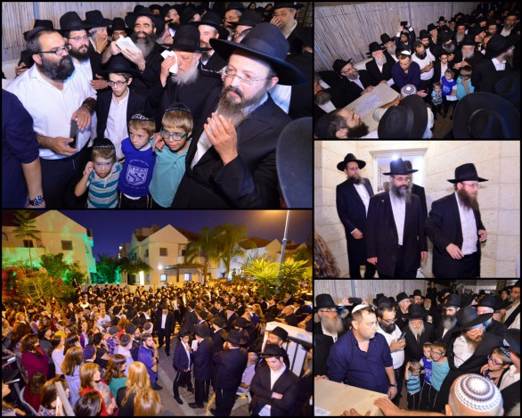

רחוב הנוער הלאומי בראשון לציון, רחוב שקט במיוחד, התעורר בבהלה מהנמנום הממושך הרו
רחוב הנוער הלאומי בראשון לציון, רחוב שקט במיוחד, התעורר בבהלה מהנמנום הממושך הרובץ עליו בכל ימות השנה. אלפים מילאו בבת אחת את הרחוב הירוק, באו לחלוק כבוד אחרון לאחת מתושבות השכונה, שכשרה אמנו בשעתה, לא הייתה “אחת התושבות” אלא אחת ומיוחדת בקרב התושבות; זו שקוראת בקול גדול בשם השם א–ל עולם.
רחוב הנוער הלאומי בראשון לציון, רחוב שקט במיוחד, התעורר בבהלה מהנמנום הממושך הרובץ עליו בכל ימות השנה. אלפים מילאו בבת אחת את הרחוב הירוק, באו לחלוק כבוד אחרון לאחת מתושבות השכונה, שכשרה אמנו בשעתה, לא הייתה “אחת התושבות” אלא אחת ומיוחדת בקרב התושבות; זו שקוראת בקול גדול בשם השם א–ל עולם.

ההלוויה הייתה פרידה שבדיעבד, מהסיבה הפשוטה: איש לא הספיק להיפרד ממנה בחייה. ההלם היה לנחלת בני משפחתה כמו גם חברותיה, מכרותיה, ומאות תושבי השכונה שהכירו אישית את השליחה הנמרצת שמסרה שיעורי תורה, אירחה בלבביות ובמאור פנים מדי שבת משפחות רבות, שידעה לתת אוזן קשבת ולב אכפתי למאות מנשות השכונה שנקשרו אליה בעבותות של אהבה.
אלפים רבים מילאו את הרחובות הסמוכים כדי להיפרד בלב כואב ובעיניים דומעות מהאישה שהייתה לסמל של חיים וחיות, סמל של עשיה עיקשת, בלתי פוסקת. עדות אילמת, אך מוארת למעשיה, הוא הבניין עם הלבנים האדומות–חומות בדמות 770, שמתנוסס לו בגאון, מאחורי פיגומים, בלב השכונה. חלונות מוכרים, הבליטה הידועה שבקומה השניה, הפתח שכולם כמהים להיכנס בו - הכול הועתק לשכונת ‘נעורים’ בראשון לציון.
אלפי המלווים צועדים חרישית ברחובות השכונה מביתם הפרטי של השלוחים לעבר ‘770’, מקום גאוותם של הרב אליהו וחני סגל. בית בו השקיעו שקל ועוד שקל, והיו מונחים בבנייתו 24 שעות בעשור האחרון. לא היתה שיחת טלפון עם הרב סגל או עם חני, בה לא הוזכרה השלמת הבנייה. את כל כספי הנדוניה שלהם והחסכונות, השקיעו בבניין המתהווה.
תושבי השכונה המכירים היטב את משפחת השלוחים, ואת הרבנית חנה סגל, מתקשים לעכל. הם המומים וכואבים, ובעיקר לא מבינים, איך אישה צדקנית וצעירה, נעלמת ככה לפתע פתאום. אין תשובות, ולא יהיו תשובות, וצריכים לשאול: למה?, ריבונו של עולם, “למה הרעת לעם הזה”? כמה עוד אפשר?
הדמעות זולגות והעשייה מתמשכת
באתי ביום שני השבוע לנחם באוהל האבלים שהוקם במיוחד בחצר משפחת סגל, ולמעשה בחצר בית חב”ד של משפחת סגל. הבית עצמו צר מהכיל את הבאים. אלפים מגיעים. בני המשפחה יושבים בסך על כסאות אבלים, במרכז יושבים הרב אליהו סגל ובנו הת’ מנחם מענדל, תלמיד שיעור א’ בישיבת ‘תומכי תמימים’ באור יהודה. אך לא מזמן נפרד מסינרה של אמו ויצא להצטרף ללגיון השורות של חיילי בית דוד.
לצורך כתיבת הכתבה, התעכבתי יותר מכפי שמנחמים אמורים להישאר. ביקשתי לדבר, להקשיב, לראות ולהיות נוכח. ר’ אליהו, שה’ יתן לו כוחות, ממשיך לעבוד במלוא המרץ גם בשבתו על שרפרף האבלים הנמוך. הוא מקבל בתשומת לב מיוחדת את פני המקורבים שלו, תושבי השכונות מסביב. ביניהם מגיעים גם אנשים שהיו חלק בלתי נפרד מעבודות הבניין בדוגמת 770 שהוקם בשכונה. לצדי יושב מי שחפר את היסודות של הבניין. בסמוך יושב קבלן אינסטלציה. כולם מניחים על ראשם כיפה מאולתרת. בקלות ניכר כי הגיעו לא רק כדי להזדהות ולנחם, אלא כי הם מרגישים חלק בלתי נפרד מהעשיה הברוכה. הם שותפים. ר’ אליהו מספר להם על החלום והחזון הגדול של רעייתו בבניית הבניין והמקווה, ומדרבן אותם להמשיך להתקדם בעבודת הבניה, ובמרץ יותר מכפי שהיה קודם. בשעה זו לבם פתוח ורגיש, והם מהנהנים בראש, מניחים יד על הלב בהבטחה שהכל יתקדם על הצד היותר טוב, ויוצאים החוצה עם ‘הוראות הפעלה’.
הם קמים ולידי מתיישב אברך שאיני מכירו. מסתבר שהוא שליח באחת הערים באוקראינה. ר’ אליהו מסמן לו להמתין רגע, והוא קורא ליהודי מבוגר, בעל שפם לבן, מגולח למשעי וכיפה לבנה מגוהצת על ראשו. הוא דובר רוסית “מאיזור דנייפרופטרובסק”. לא שאלתי, אבל הבנתי שהאיש בעל יכולות כלשהן, ור’ אליהו מחבר בקלילות בין השליח הצעיר לבין האיש.
“מה אתה צריך ממני?” שואל האיש את השליח.
“אני רוצה לבנות מקווה כעת”.
ר’ אליהו סגל מתערב: “למה שלא תקשר אותו עם גב’ פלונית?!” (ונוקב בשמה).
השניים קמים מכסאות המנחמים, יוצאים מהאוהל ומסתודדים ביניהם כרבע שעה. הם חוזרים, לוחצים ידיים, והמנחם עם השפם הלבן מסמן לר’ אליהו “הכל בסדר, אל תדאג”. ר’ אליהו מהנהן קלות בראשו.
הסיפור הזה מתחבר לי לסיפור ששמעתי על הטיסה רוויית היגון מניו יורק לארץ ישראל, כשעל סיפונה ר’ אליהו והוריה של חני ע”ה, הרב הנדל ורעייתו יבלחט”א. הדמעות זולגות בחופשיות, והדרך הטראנס–אטלנטית סיוט מתמשך שלא–נגמר. הלב חושב להתפקע. ר’ אליהו מחליט לקום ממקומו, ולהיות שליח פעיל. הוא מבקש מיהודים להניח תפילין. אחד מהם מתעקש שלא להניח, אך גם ר’ אליהו מתעקש.
“מאין אתה מגיע?”
“אני חוזר כעת עם אשתי מטיול משותף שערכנו”, משיב הסרבן.
“גם אני חוזר כעת עם אשתי”, אומר ר’ אליהו בשקט. “היא נמצאת כעת בבטן המטוס”. הסרבן כבר לא היה סרבן, ובשתיקה של השתתפות בצער הפשיל שרוול של יד שמאל, פשט ידו למצווה.
גם באבלו הגדול, לא שוכח ר’ אליהו את תפקידו המרכזי - שליח של הרבי. לא סתם שליח של הרבי שדואג לשכונתו, אלא גם לעולם כולו. הכל מונח על כף מאזניים. מספיק מעשה טוב אחד של אבֵל הנאבק בגלי היגון, שיכול להכריע את העולם כולו לכף זכות ולגרום לו ולהם תשועה והצלה.
משפחת אנ”ש מתלכדת ומתאחדת
זה החל בסביבות ראש השנה כאשר התפרסמה קריאה להתפלל לרפואתה השלמה והמהירה של חנה בת חיה רחל. מהר מאד נודע כי מאחורי השמות עומדת השליחה בשכונת ‘נעורים’ בראשון לציון. תחושת בהילות ודחיפות עמדה מאחורי הקריאה לומר פרקי תהילים.
ואכן, אלפים רבים מאנ”ש חסידי חב”ד, ולא רק, מכל רחבי העולם, התגייסו לאמירת פרקי תהילים עבור “האמא לתשעה ילדים שנמצאת בסכנה”, כלשון ההודעה.
ההתלכדות התעצמה שבעתיים, כאשר גויס סכום עצום של כחצי מיליון דולר עבור טיפול דחוף מציל חיים שהיה צריך לבצעו בבית רפואה בטקסס הרחוקה. יותר מארבעת אלפים ומאתיים משפחות נחלצו לסייע במימון הסיכוי הזה להחזיר אֵם לילדיה, אֵם שעזבה את הבית בעיצומם של החגים בהבטיחה לילדיה כי תשוב מיד בסיום הטיפול. מי האמין שתשוב באופן כזה?!
ואז, כשהדברים החלו מעט להסתדר, באופן יחסי, ארעה התדרדרות בלתי צפויה במצב בריאותה. הרופא הבכיר ששאל את ר’ אליהו מה לעשות, קיבל תשובה פסקנית: “להילחם!” אבל הקב”ה בחר לרדת לגנו ללקוט שושנה, והשליחה השיבה את נשמתה ליוצר הנשמות והיא בת ארבעים שנה בלבד. על מה עשה ה’ ככה??
גם בשלב הזה, הלכידות הגדולה של משפחת אנ”ש חסידי חב”ד הייתה לפאר ולדוגמה של אחוות אחים. דומה כי מאז האסון הגדול בו נרצחו בדמי חייהם ר’ גבי הולצברג ורעייתו, שלוחי הרבי בבומביי, לא הייתה לכידות שכזאת; השתתפות בצער ובכאב - מחד, וסיוע ותמיכה חוצי יבשות - מאידך.
ההלוויה שנמשכה כשבעים שעות (!) יצאה מבית הרפואה שבטקסס לעבר ‘בית חיינו’, מקור האור שממנו יוצאים השלוחים לכבוש את העולם, שם השתתפו אלפים מתושבי השכונה בדממה רוויית כאב. משם המשיכה ההלוויה לעבר ארה”ק. אלפים מלאו את רחובות שכונת ‘נעורים’, בהם שלוחים מכל רחבי הארץ, תושבי השכונה, אנ”ש ובני המשפחות. ההלוויה יצאה מהבית בו גידלה במסירות נפש את ילדיה לתורה, לחסידות ולשליחות, לעבר הבניין בו השקיע את תמצית חייה - 770 של ראשון לציון. למרגלות הבניין שהואר במיוחד, נשא דברים רב קהילת חב”ד בראשון לציון, הרב מרדכי צבי דובראווסקי, שהזכיר את מסירותם של השלוחים להפצת תורה וחסידות בשכונה, ולהקמת בית 770. השליח בראשון לציון הרב יצחק גרוזמן הבטיח בשם אחיו השלוחים בעיר להמשיך לסייע לרב סגל ומשפחתו בכל המצטרך, וכן בהשלמת בית 770. דברי פרידה בשם המשפחה נשא האח הרב שלום דובער הנדל, ראש ישיבות חב”ד באור יהודה, שקולו המרוסק ניסר את השקט: “חנהל’ה, חנהל’ה”, וקהל האלפים געה בבכי חסר מעצורים. עין לא נותרה יבשה.
הקדיש של היתומים שטלטל את כל אנ”ש
כל מי שלבו פועם ובעורקיו זורם דם, לא יכול היה לכלוא את הזעזוע שפקד אותו. ילדים צעירים, שהקטן בהם עולל בן שנה וחצי, מלווים את אמם באישון לילה לקבורה.
ובשעה קשה זו, אי אפשר שלא להיזכר בשיחה הנוקבת שנשא הרבי בט’ באדר ראשון תשנ”ב, לאחר מסירות נפשה של אחת מתושבות ‘קראון הייטס’, כאשר הרבי דיבר בכאב נורא, כביכול אל הקב”ה, על כך “שלוקחים נשמה יהודית, ולוקחים אותה מהילדים שלה, שהרי בנוגע לאמא, זה יותר מסירת נפש מאשר בשעה שמדובר על מסירת הנפש שלה עצמה; כי בשעה שמדובר במסירות נפש שהיא מפקירה ומוסרת לאחר את החינוך של ילדיה, שזה ייעשה על ידי אחר, הרי זו מסירת נפש בנוגע לאמא מסירות נפש למעלה ממסירת נפש”.
אי אפשר שלא להביט ברב אליהו הלוי סגל עומד ליד הארון בו נמצאת הרעיה שנקטפה ממנו, כשהוא חובק חמישה ילדים מתוקים, מתוך תשעת הצאצאים שנותרו יתומים. הם עומדים יחד, ידיהם מונחות זה על כתפי זה, והם פותחים באמירת קדיש שמטלטלת את הקהל כולו. הילדים בוכים ומתייפחים, והלב נקרע לגזרים.
אי אפשר שלא להזיל דמעות ולבכות את השריפה אשר שרף ה’. קל ואפילו מתבקש לזעוק כלפי שמיא: למה עשה ה’ ככה? עד מתי? מה פשעם ומה חטאם של תינוקות של בית רבן שלא טעמו טעם חטא. על מה ולמה ילד פעוט נתלש ממיטתו ונאלץ לצעוד אחר מיטת ארונה של אמו. מדוע הושטו באישון לילה, תחת כיפת שחור השמים, סידורים פתוחים לנגד עיני הילדים הרכים הללו - במקום שתהיה זו האם הבוטחת שלהם המושיטה להם סידור תפילה או ספר לימוד, לפני או אחרי ארוחת הערב.
בשעת ערב מאוחרת המשיכה ההלוויה לצפת, שם, בסמוך לחצות הלילה, מתכנסים בדממה אלפים בבית הכנסת “היכל לוי יצחק”. בני הקהילה המכירים את משפחת הנדל מזה עשרות שנים, ואת השליחה הגב’ סגל, שגדלה והתחנכה במוסדות חב”ד בצפת, חשים את הכאב העז, ומבקשים לחזק את בני המשפחה בשעתם הקשה. מסע ההלוויה הקשה והארוך מסתיים בשעה 2 לפנות בוקר כשהמנוחה נטמנה בבית העלמין בצפת.
מקווה שנועד לחולל מהפכה תודעתית
השקט המנומנם שאופף את הרחוב (והרחובות הסמוכים) הופר לא רק בעת ההלוויה, אלא גם במהלך ימי השבעה. אלפים מכל קצות הארץ הגיעו לנחם את ר’ אליהו הלוי, את תשעת ילדיו, את ההורים והאחים והאחיות למשפחת הנדל. כולם יושבים בסך באוהל הגדול. כל אחד מהאחים והאחיות הינו חלק ממערך השליחות של הרבי ברחבי העולם, וכל אחד מהם הוא דמות עבור מאות ואלפי אנשים במקום שליחותו. מהיכרות אישית שלי עמם, פסק–הזמן הזה משטף העשיה של כל אחד מהם, הוא קושי עצום. ר’ לוי הוא שליח במארין פארק בברוקלין ניו יורק, ר’ מנדי עומד בראש ‘מרכז חב”ד העולמי לקבלת פני משיח’ ובנוסף בראש מוסדות חינוך מפוארים לילדי ובחורי שכונת קראון הייטס, ר’ שמואל עומד בראש ‘מטה משיח’, ר’ יוסף הוא ראש ישיבת חב”ד בבאר שבע והאח הצעיר, ר’ שלום בער הוא ראש ישיבות ‘תומכי תמימים’ באור יהודה ושליח באחת משכונות העיר. במרכז יושב הרה”ח הרב שניאור זלמן אליהו העומד בראש מוסדות החינוך “אור מנחם” בצפת ומראשוני השלוחים בצפת. בסלון הבית יושבת הרבנית רחל הענדל, אשר זה עשרות שנים עושה אלפי נפשות לתורה ולחסידות, ולצדה שתי בנותיה המשמשות כשלוחות בפתח תקווה ובצפת.
מדרך הטבע, בחיי היום יום, כל אחד מהם טרוד בשלל טרדותיו והעומסים המתבקשים מתוך גיזרת הפעילות שלהם, ופחות זה בנחלתו של אחיו. כעת הם נחשפים לראשונה לעשיה העצומה של אחותם חני בשכונת ‘נעורים’ ו’גני אסתר’ בראשון לציון.
הרב מנחם מענדל הענדל: “זו הפעם הראשונה שאני נחשף לעומק לעבודתה של אחותי חני ויבלחט”א גיסי ר’ אליהו”, הוא מודה. “כשאני יושב פה ורואה את המוני המנחמים, ומקשיב למאות הסיפורים של תושבי השכונה שמספרים כיצד הפעילות שלהם הפכה להיות חלק מחייהם - אני משתאה בכל פעם מחדש לכוח העצום שלה, ליכולת שלה לדחוף קדימה ולבצע מהלכים בשטח.
“שניהם הגיעו ל’נעורים’ כדי להכין אותה לקראת משיח צדקנו, ונדמה לי שהם לא הותירו פה אבן על אבן. כבר בהתחלה הם הלכו בית אחר בית, משפחה אחר משפחה; ערכו היכרות עם המשפחות ועם התושבים, הזמינו אותם לסעודות שבת, ערכו מגוון גדול של פעילויות בקרב תושבי השכונה, כמו גם בקרב הילדים”.
הרב יצחק גרוזמן, השליח בראשון לציון, לא יכול לכבוש את התפעלותו מהתרומה של בני הזוג סגל לפעילות בעיר: “ר’ אלי ואשתו הם זוג מנצח”, הוא אומר. “אפשר לראות את זה לפי כמויות של תושבי המקום שהגיעו לתפילות בימי ה’שבעה’. למרות שזו שכונה די גדולה, אין אחד שלא מכיר אותם. חני אירחה הרבה בשבתות, דאגה לערבי נשים בשכונה ועבור תושבות העיר כולה. תמיד היא הייתה ה’מנוע’.
“כשחנה רצתה משהו, היא הייתה עושה הכל כדי שיתממש. היא לא היססה להתקשר שוב ושוב, ותמיד הציגה את הדברים בטוב טעם.
“כך גם המקווה שהם בונים, התכנון הוא ‘הכי הכי’, כמו שאומרים. היא נכנסה לעניין ‘לפני ולפנים’, לאחר שכתבה דו”חות לרבי, ובכל פעם קיבלה תשובות בנוגע למקווה. הייתה לה מסירות נפש להקמת המקווה כמו גם לבניין 770. את כל הנדוניה שלהם והחסכונות, הכל השקיעו בסוון סוונטי, כשהם חדורי מטרה”.
ר’ אליהו יושב על שרפרף נמוך, מוקף בכמה יהודים, שניכר כי אינם שומרי מצוות באופן תמידי. הם שואלים על בניין 770, והוא מסביר להם בעיניים נוצצות: “כשחני ישבה עם האדריכלית, היא אמרה לה בפרוטרוט מה היא רוצה שיהיה בבניין. היא תיארה לה בחיוניות את המקווה איך היא רוצה שייבנה - ‘עם מדרגות זכוכית, עם מפל מים ליד הכניסה ואורות דקורטיביים בצד ההוא’, וכן הלאה. האדריכלית שפשפה עיניים בתימהון. ‘חני’, שאלה אותה, ‘את בטוחה שיש לכם כסף לכל התכניות שלכם’? וחני ענתה: ‘כסף זה חשוב, והכסף עוד יגיע, כעת נתחיל לתכנן ולבצע, וה’ ישלח את הכסף בזמן הנכון’”. ר’ אליהו מספר למנחמים על פעולותיה של רעייתו ועל התכניות הגדולות שלה.
“היא מסרה באופן קבוע שיעורים בנושאי טהרת המשפחה וקירבה נשים רבות לחיי טהרה. תמיד הייתה נכונה לשמוע ולייעץ, לעזור בכל מה שצריך. היא לא ‘עיגלה פינות’”.
ואכן, מסתבר שהתכניות של המקווה שנבנה ממש כעת, הן מיוחדות במיוחד, מהמיוחדות בארץ ישראל. לא פחות. מקווה שאמור להיות דוגמה ומופת, ולמשוך אליו המוני נשמות שיידעו מהו מקווה טהרה יפה. בעיני רוחה היא ראתה מקווה–ספא מרהיב ביופיו, שבשעות היום ישמש כמרכז מבקרים. בקומה העליונה אמור להיות אולם אירועים, וכל כלה שתבקר במקווה תוכל לערוך ‘חינה’ בחינם באולם.
ר’ אליהו מספר על הנסיעה הבהולה לטקסס בערב יום כיפור, לאחר שהרופאים בארץ ישראל גילו את המחלה והרימו ידיים. “מדובר בבית רפואה ענק”, הוא מספר, “וכשהגענו לשם, חני אמרה שצריך למצוא למה נשלחנו משמים למקום הזה, מה השליחות שלנו. לא סתם הגענו לכאן”…
השלם זה הבניין
אחד מאנ”ש הפוקד את המקום משוחח עמי על ההלוויה שעברה ליד הבניין החדש, שמצפה כעת להשלמתו. “יש בכך משום עזות דקדושה חב”דית שאין ולא יהיה לה אח ורע”, הוא אומר לי. “התחנה הזו במסע ההלוויה - שהחל בבית חיינו שממנו קדושה לא זזה, נמשך בראשון לציון והסתיים בבית החיים בצפת - אומרת יותר מכל שהפעילות לא תיפסק חלילה. הבית הזה שראה את הדמעות הרבות, יקום ויכון, ויהיה, כלשונו הקדושה השגורה כל כך בפי הרבי מה”מ, “בית שמגדלים בו תורה, בית שמגדלים בו תפילה, בית שמגדלים בו מעשים טובים”.
המנחמים קמים בזה אחר זה ואומרים את הנוסח המקובל והידוע. אך הנחמה? מה אפשר לנחם, ומה הן המילים שאפשר לנחם באמת את ר’ אליהו שי’ ואת ילדיו? ואולי המילים שכתב הרבי מה”מ עצמו אחרי האסון הנורא בכפר חב”ד, הן המתאימות ביותר: “בהמשך הבנין תנוחמו”.
הנחמה הגדולה של כלל אנ”ש את משפחת סגל, היא גם בסיוע לסיים ולהשלים את הבית הגדול, גם זה הפרטי וגם הציבורי, “השלם זה הבניין”, לנחת רוחה של השליחה, ולקבלת פני הרבי משיח צדקנו בשכונת ‘נעורים’ בראשון לציון.